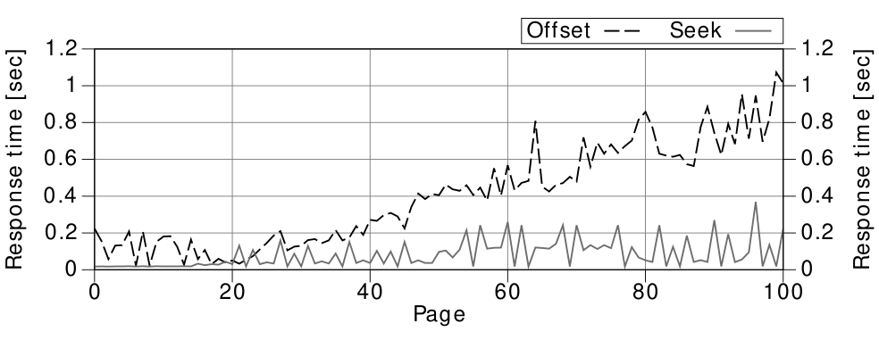

Chương 7: Kết quả một phần
Hình 7.4 so sánh các đặc điểm hiệu suất của phương pháp offset và seek. Độ chính xác của phép đo không đủ để thấy sự khác biệt ở bên trái của biểu đồ, tuy nhiên sự khác biệt rõ ràng có thể nhìn thấy từ khoảng trang 20 trở đi.

Tất nhiên phương pháp seek cũng có nhược điểm, khó khăn trong việc xử lý là điều quan trọng nhất. Bạn không chỉ phải diễn đạt câu lệnh where rất cẩn thận—bạn cũng không thể lấy các trang tùy ý. Hơn nữa, bạn cần đảo ngược tất cả các phép so sánh và sắp xếp để thay đổi hướng duyệt. Chính hai chức năng này—bỏ qua các trang và duyệt ngược—không cần thiết khi sử dụng cơ chế cuộn vô hạn cho giao diện người dùng.